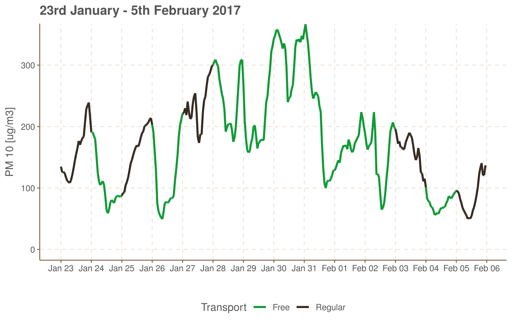

In this post I take a look at the resolution providing free transport for car drivers in case of huge air pollution, adopted in Krakow in 2015. Three versions of this resolution have been in use. In the first version, decision about providing free transport was on a basis of measurements from the previous day. But this method was criticized for having one-day lags in decisions. In the next version decisions were based on forecasts. But what was criticized then was the accuracy of those forecasts. From 5th July 2018 both criteria are used. Which is a good idea as I show below.
This post is a modified version of my assignment paper for Quantitative Analysis of Managerial Decisions classes on the Jagiellonian University (contents, version 2018-10-03). I submitted the paper in June, but three weeks later the resolution, which I analise here, was changed. So the report needed to be changed too.
As this is my first bigger analytical project I ask readers for their indulgence with respect to the code quality.- Air pollution in Kraków
- Overview
- Free transport in the old version of the resolution.
- Announcements based on forecasts
- Combined aproach
Air pollution in Kraków
From many years the city of Kraków has faced serious environmental problem of air pollution. According to European Environment Agency report from 2013 Krakow is third mostly polluted city in Europe among around 400 investigated 1.
There are several sources of air pollution in Krakow and the impact of all of them is amplified by unfavourable geographical location. They also differ for different types of pollution. Here I focus on Particulate Matter 10 nm (PM10) for reasons explained below. Report contributed in 2015 to Małopolska Marshall’s Office 2 suggests that main sources of PM10 pollution are:
- local, superficial sources (e.g. chimneys’ smoke): ~ 57%
- industry: ~23%
- local communication: ~16%
Free transport resolution
Several programs aimed at pollution reduction have been started in recent years. One of them is the resolution, adopted in December 2015 by municipal council. It allows passangers (car drivers and their passengers in a number specified in cars registration document; after some changes: everybody) to use public transportation means for free at given day if PM 10 pollution at the day before was high enough.
Although the idea of providing free transportation has been widely supported, criteria adopted in municipal council document were often criticized. The main disadvantage, which was pointed out, was the observation that in such a shape the resolution always works with one day lag. If the pollution was high at a given day and not at the day before, there was no possibility to announce free transport then, but only at the following day.
For this and similar reasons the resolution was changed in December 2017 3 and from then the decision about announcement of free transport was based on forecasts provided by Institute of Meteorology and Water Management. The accuracy of forecasts was unsatisfactory however. Therefore the new adaptation has been made and now decision is based on forecasts and also on measurements from 3am at a day of interest.
Below I take a look at the performance of past versions of the resolution and compare them to hypothetical scenario of usage of the current version.
Data
I have obtained data from the following sources:
- Information about days, when free transport was provided I have received as a response for public information request sent to City Hall (Attachment 1, in Polish), as there is no publicly available register of all free transport announcements. Because there were some inconsistency between data I received and records in the Bulletin of Public Information (exhibiting clear patterns as e. g. one day lag) I have eventually composed list of the free transport days from those two sources.
- Data about PM 10 pollution I have scrapped from Regional Inspectorate of Environment Protection site (http://monitoring.krakow.pios.gov.pl/dane-pomiarowe/automatyczne) using automated queries run with
curllibrary (scripts on Github: scrapping, extracting). - Meteorological data were obtained from Institute of Meteorology and Water Management (IMGW) archives (https://dane.imgw.pl/data/dane_pomiarowo_obserwacyjne/) by hand.
Overview
Pollution course
The figure below shows day-by-day course of the average level of PM 10 pollution. Daily norm of admissible pollution is 50 \(\mu g/m^3\) and it shouldn’t be exceeded more than 35 times a year. I focus only on data from November 1st to March 31st, since there norms exceedeness in summer months almost never occur.
It is also interesting to look at the averaged course of the pollution in one day:
The highest level is observed at night, most probably because of heating in houses. We observe decreasing trend towards morning, when pollution slightly increases. Then it goes to minimum at afternoon and returns to high values at evening and night.
As we will see this pattern can be exhibited in different scale and contaminated or changed by different factors and eventually daily course can look much different.
Free Transport Annoucements
The following table presents when the free public transport for car drivers was provided:
| Heating season | Free transport days |
|---|---|
| 2015/16 | Jan-02, Jan-24 |
| 2016/17 | Nov-25, Jan-09, Jan-10, Jan-11, Jan-12, Jan-21, Jan-24, Jan-26, Jan-28, Jan-29, Jan-30, Jan-31, Feb-01, Feb-02, Feb-04, Feb-15, Feb-16, Feb-17, Feb-18 |
| 2017/18 | Jan-02, Jan-07, Mar-07 |
We can see the correlation between this table and seasonal course. In 2016/17 season, when pollution was generally high there are many announcements and there are only four in other seasons, when the pollution level only few times exceeded level of 100 \(\mu g/m^3\) (at the begging of 2015/16 season the resolution has not been adopted yet).
There were 24 announcements at all, 21 in the old regime (based on previous day data) and three in the new one (based on forecasts). This is scarely enough (with data I have) to examine whether there was any impact of the resolution on pollution level. Moreover different patterns of pollution course can be observed what makes any inference even more difficult.
Free transport in the old version of the resolution.
Isolated days
As we can see from the table above, there were four days of all with free transport we can call isolated, as time to the next or the previous announcement was longer than one day.
Three observations are relevant here:
- At each of those days PM 10 pollution was lower than at the previous day.
- This fact however should not be explained as a result of lower transport pollution rates. Drops in the pollution level occurred before rush hours and were much bigger than 16% mentioned before (with exception to 21st January). On the other hand we can’t say that there was no impact of resolution at all, at those days. Maybe it prevented pollution level to increase back. But accurate explanatory models would be required to check such assumptions.
- Daily courses of pollution are much different than average course. And one can check that this observation can be applied not only to those four days.
Series
Rest of days with free transport (in the old version of resolution) can be naturally compounded into longer series:


Although the set of days with free transport was relatively small we can perhaps say that following criticisms of the first version of resolution were sound:
- The result of basing decisions on past data is that there is always one day with high pollution and regular transport fees and one day with free transport but relatively small pollution which is not desirable.
- When pollution level oscillated, free transport was (twice) switched off too early ending up with the situation of the high pollution and regular transport policy.
Announcements based on forecasts
To avoid problems mentioned above, from the beginning of 2018, forecasts have been used to make decisions about free transport. But unfortunately their quality was not satisfactory. At all three days when free transport was provided in 2018, pollution was not very high, according to old version of resolution standards:
Moreover, there were three days when pollution was high, but forecasts did not predict it:
Own forecasting
On the Institute’s website one can find that forecasts are based on physical and statistical models with this second group consisting of ARIMAX and neural networks. I’ve tried to make some forecasts on my own, with ARIMAX model. Honestly, they are not accurate with respect to Mean Absolute Percentage Error (MAPE), but theyare still better predictors of days with pollution high enough to provide free transport, than official forecasts.
As exogenous variables for ARIMAX I use atmospheric data from one day before a day I am predicting for. Among available data about cloudiness, wind speed, temperature, atmospheric pressure, humidity and precipitation, I have chosen first four parameters, as they were recognised as statistically significant.
Model 1: day-by-day
In the first model I predict daily means of pollution level with ARIMAX(1, 1, 1)
## Series: train$pm10
## Regression with ARIMA(1,1,1) errors
##
## Coefficients:
## ar1 ma1 Cloudy Wind_speed Temperature Atm_pressure
## 0.4147 -0.9533 -4.689 -2.3576 -1.8593 0.9719
## s.e. 0.0916 0.0411 1.079 1.4011 0.6898 0.2910
##
## sigma^2 estimated as 1114: log likelihood=-1781.33
## AIC=3576.66 AICc=3576.98 BIC=3603.9
##
## Training set error measures:
## ME RMSE MAE MPE MAPE MASE
## Training set -2.179258 33.05936 23.52667 -25.79171 48.53361 0.8725715
## ACF1
## Training set -0.03025321Model was trained on days prior to 1st January 2018 and that’s how it looks on new data (new data are taken into account every day, model parameters remain the same):
The Mean Absolute Percentage Error on test set was 34.2 which is not satisfactory.
## ME RMSE MAE MPE MAPE
## Test set 0.7784388 23.78388 17.79086 -12.49377 34.22897This forecast predicts daily average pollution but criteria specified in resolution deal with within-day time windows. In the second specification of criteria the average pollution must be greater than 150 \(\mu g/m^3\) between 1am and 4/5pm or between noon and 10/11pm 4. So there is a need to specify some threshold to decide, on a base of forecast, whether to provide a free transport or not. I use ROC curve to check the dependence between daily average pollution and criteria fulfilment (on a training set) and finally to determine this threshold.
The optimal value (in accuracy metric) for threshold determined on training data equals 123.68.Unfortunately this model is not useful for predicting high, free transport-demanding pollution. Although it doesn’t produce any false positives it also doesn’t predict any of days with high pollution it should.
| Date | Actual PM10 | Predicted PM10 | Free transport acc. to prediction | Free transport acc. to old criteria |
|---|---|---|---|---|
| 2018-01-26 | 175.1451 | 81.7254 | FALSE | TRUE |
| 2018-03-04 | 152.0842 | 103.5400 | FALSE | TRUE |
| 2018-03-05 | 148.9446 | 119.0586 | FALSE | TRUE |
Model 2: hour-by-hour
Let us use hourly taken measurements instead of daily averages. Not having such detailed meteorological data I will use the same, average measurements for the whole day.
However we could expect 24-hour seasonality in our data, main tests for seasonality do not spot it. I decided then to use arithmetic mean of two ARIMA models: (3, 1, 3) without seasonality and (2, 1, 2) with (1, 1, 1) 24-hour seasonality. Both of them has some advantages and disadvantages and the mean has lower error then any of the two alone.
The figure below shows values predicted by this model on test data:
 Mean Percentage Error of this forecast equals 48.6%. This model, however, is better with respect to decision process:
Mean Percentage Error of this forecast equals 48.6%. This model, however, is better with respect to decision process:
| Date | Predicted Huge Pollution | Actual Huge Pollution | |
|---|---|---|---|
| 26 | 2018-01-26 | TRUE | FALSE |
| 27 | 2018-01-27 | FALSE | TRUE |
| 28 | 2018-01-28 | FALSE | TRUE |
| 63 | 2018-03-04 | TRUE | TRUE |
| 64 | 2018-03-05 | TRUE | TRUE |
Although it has one false positive and two true negatives, this model correctly predicted two days with high pollution.
Combined aproach
But how does this model really work? Let’s take a look at the fragment of the forecast between 3rd and 6th of March.
Basically, this forecast pastes re-scaled daily average values (periodical part is responsible for it) and add some angle (that is the impact of non-periodical part). So this particular model is not really far from the naive forecasting. It is very bad at predicting within-day variability, but not so bad for predicting high-or-low states.
In the current version of resolution forecasts are still used but free transport is also provided if the average pollution from all stations is higher than 150 \(\mu g/m^3\) at 3am. And having in mind that model specified above, which is in fact similar, helps making decisions quite nicely, we can consider this change as a good choice. Let take a short look how the state of affairs would look like if this criterion were used from the beginning.
There were 16 days when the current version coincides in considering a day as one with high pollution. Current version, although is kind of a forecast, applicable immediately, while we had to wait until next day to average-based method be implemented. 16 days were spotted as highly polluted only by the current version and 8 only by averages method.
Show table ▼
| Day | High pollution according to 3am criterium | High pollutoin according to averages |
|---|---|---|
| 2015-12-25 | TRUE | FALSE |
| 2016-01-01 | TRUE | TRUE |
| 2016-01-19 | TRUE | FALSE |
| 2016-01-23 | TRUE | TRUE |
| 2016-02-27 | TRUE | FALSE |
| 2016-03-17 | TRUE | FALSE |
| 2016-03-18 | TRUE | FALSE |
| 2016-11-24 | FALSE | TRUE |
| 2016-12-05 | TRUE | FALSE |
| 2016-12-17 | TRUE | FALSE |
| 2016-12-31 | TRUE | FALSE |
| 2017-01-01 | TRUE | FALSE |
| 2017-01-08 | TRUE | TRUE |
| 2017-01-09 | FALSE | TRUE |
| 2017-01-10 | FALSE | TRUE |
| 2017-01-11 | TRUE | TRUE |
| 2017-01-20 | TRUE | TRUE |
| 2017-01-23 | FALSE | TRUE |
| 2017-01-24 | TRUE | FALSE |
| 2017-01-25 | FALSE | TRUE |
| 2017-01-27 | TRUE | TRUE |
| 2017-01-28 | TRUE | TRUE |
| 2017-01-29 | TRUE | TRUE |
| 2017-01-30 | TRUE | TRUE |
| 2017-01-31 | TRUE | TRUE |
| 2017-02-01 | FALSE | TRUE |
| 2017-02-02 | TRUE | FALSE |
| 2017-02-03 | TRUE | TRUE |
| 2017-02-14 | FALSE | TRUE |
| 2017-02-15 | TRUE | TRUE |
| 2017-02-16 | TRUE | TRUE |
| 2017-02-17 | TRUE | TRUE |
| 2017-11-25 | TRUE | FALSE |
| 2018-01-26 | FALSE | TRUE |
| 2018-01-27 | TRUE | FALSE |
| 2018-02-13 | TRUE | FALSE |
| 2018-03-04 | TRUE | TRUE |
| 2018-03-05 | TRUE | TRUE |
Days falling into category ‘only averages’ are those with increasing or highly variable pollution level and those falling only into ‘3am’ usually have big drop at afternoon, sometimes returning to the high level at evening.
As the current version is activated during days with decreasing pollution we can see that it covers days with lower 24h-average PM 10 level than averages method.
http://www.gazetakrakowska.pl/artykul/1017323,najbardziej-zatrute-miasta-europy-krakow-na-podium-n-sacz-w-czolowce-raport,id,t.html↩
https://bip.malopolska.pl/umwm,e,pobierz,get.html?id=130889↩
In 2016 the definition of high pollution has been slightly changed, generating formally different version of the resolution, but as the method remained principally the same, I’m going to neglect this change wherever it doesn’t make confusion.↩
I use this version for comparisions on a test set.↩